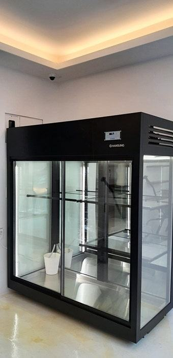
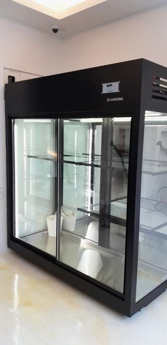
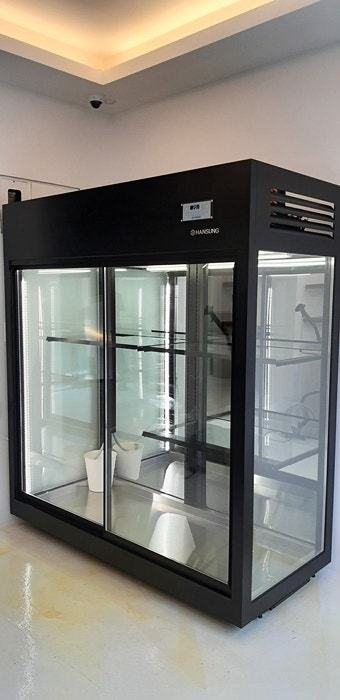
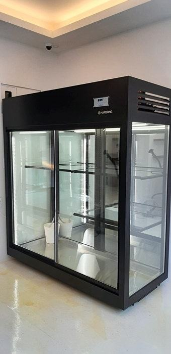
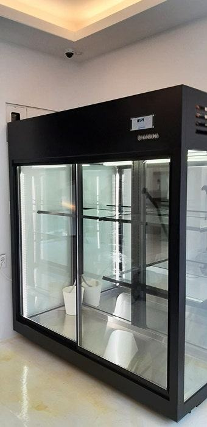
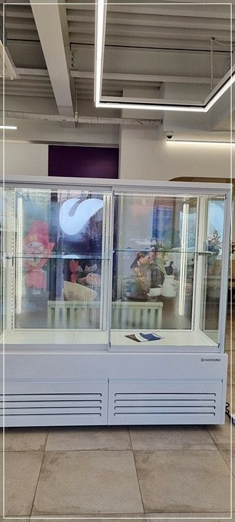
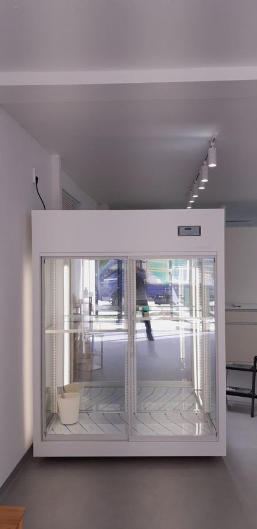

꽃냉장고
꽃냉장고 콤프레셔, 상태를 확인하는 법과 오래 쓰는 관리

꽃냉장고 콤프레셔는 겉으로 상태가 보이지 않아, 설정 온도까지 내려가는 시간, 가동 소리의 일정함, 켜졌다 꺼지는 주기로 판단하셔야 합니다. 평소에는 기계실 먼지와 배수 라인만 꾸준히 관리해도 콤프레셔 부담을 크게 줄일 수 있습니다.
안녕하세요. 꽃집 쇼케이스를 직접 설계하고 제작하는 한성쇼케이스입니다.
꽃냉장고에서 콤프레셔는 흔히 심장이라고 부릅니다. 냉매를 압축해 냉기를 만들어 내는 부품이라, 여기가 지치면 온도가 흔들리고 꽃이 먼저 반응합니다.
그런데 정작 사장님들은 콤프레셔가 어디 있는지, 상태가 괜찮은지 확인할 방법을 잘 모르시는 경우가 많습니다.
특히 중고 꽃냉장고를 알아보실 때나, 쓰던 장비가 예전 같지 않다고 느끼실 때 이 부분이 가장 궁금하실 겁니다.
오늘은 꽃냉장고 콤프레셔 상태를 사장님이 직접 가늠해 보는 방법과, 오래 쓰기 위한 관리법을 정리해 보겠습니다.
1. 콤프레셔가 하는 일과 꽃에 미치는 영향
콤프레셔는 냉매를 압축해 순환시키며 냉장고 안의 열을 밖으로 내보냅니다. 출력이 떨어지면 설정 온도까지 내려가는 데 오래 걸리고, 문을 연 뒤 회복도 더뎌집니다.
음료나 반찬은 온도가 잠시 흔들려도 티가 덜 나지만, 생화는 온도와 습도 변화에 바로 반응합니다. 꽃잎 끝이 마르거나 고개가 빨리 숙여진다면 꽃 문제가 아니라 장비 온도가 흔들리고 있는 신호일 수 있습니다.
2. 사장님이 직접 볼 수 있는 신호
첫째는 소리입니다. 평소 일정하던 가동 소리가 커지거나, 덜컥거리는 진동이 생기거나, 짧게 켜졌다 꺼지기를 자주 반복한다면 점검이 필요합니다.
둘째는 시간입니다. 문을 한동안 열었다 닫은 뒤 원래 온도로 돌아오는 시간이 예전보다 길어졌는지 비교해 보세요.
셋째는 쉬지 않고 계속 돌아가는 경우입니다. 콤프레셔가 멈추지 않는데도 온도가 충분히 내려가지 않는다면 출력이 떨어졌거나 냉매 쪽에 문제가 있을 수 있습니다.
이런 경우는 직접 해결하기 어려우니 바로 점검을 요청하세요.
이런 신호는 하루만 보고 판단하기 어렵습니다. 평소 상태를 알아 두기 위해 장비가 잘 돌아갈 때 소리와 온도 회복 시간을 한 번 기록해 두시면, 나중에 달라졌을 때 비교가 훨씬 쉬워집니다.
- 가동 소리와 진동 변화
- 켜졌다 꺼지는 주기
- 문 개방 후 온도 회복 시간
- 멈추지 않고 계속 도는지


3. 중고 꽃냉장고를 볼 때
중고 꽃쇼케이스에서 가장 확인하기 어려운 것이 콤프레셔와 배관 상태입니다. 겉은 깨끗해도 이전 사용자가 어떻게 관리했는지 알 수 없고, 배관에 미세한 가스 누출이 있거나 콤프레셔 출력이 떨어져 있으면 들여온 뒤 온도가 들쭉날쭉해집니다.
매물을 보러 가시면 반드시 전원을 켜고 설정 온도까지 내려가는 과정을 지켜보세요. 그리고 고장 났을 때 부품을 구할 수 있는지, A/S 보증이 남아 있는지 확인하세요.
보증이 끝난 중고는 수리비 부담이 고스란히 사장님 몫이 됩니다.
4. 콤프레셔를 오래 쓰는 관리
콤프레셔가 있는 기계실은 쇼케이스 하단이나 상단에 있습니다. 이곳 통풍구에 먼지가 쌓이면 열이 빠지지 못해 콤프레셔가 더 오래, 더 세게 돌아갑니다.
꽃집은 꽃가루와 포장지 부스러기가 많아 먼지가 빨리 쌓이니 한 달에 한 번은 부드러운 브러시나 청소기로 털어 주세요.
배수 라인도 함께 보세요. 잎사귀나 작은 쓰레기가 배수 라인을 막아 물이 고이면 냉각 효율이 떨어지고, 그만큼 콤프레셔 부담이 늘어납니다.
기계실 앞에 꽃 상자나 양동이를 쌓아 두지 않는 것도 중요합니다.
체크리스트
- 가동 소리와 진동
- 켜짐·꺼짐 주기
- 온도 회복 시간
- 기계실 먼지 월 1회 청소
- 배수 라인 막힘
- 중고라면 A/S 보증 여부
현장에서 자주 보는 경우: 중고 대형 꽃냉장고를 들였다가 후회할 때
꽃집 창업 상담에서 설비 비용을 줄이려고 대형 꽃쇼케이스 중고 매물을 먼저 알아보시는 사장님이 많습니다.
그런데 중고 구매 후 가장 많이 후회하시는 부분은 A/S입니다. 보증 기간이 끝난 경우가 대부분이라, 콤프레셔나 배관에 문제가 생기면 부품을 구하기 어렵거나 수리비 부담이 커집니다.
그래서 매장 사이즈와 분위기, 조명 색상까지 맞춘 신품 제작을 함께 비교해 보시도록 안내합니다. 새 제품은 냉각 효율과 위생 관리에서 유리하고, 출고 후 1년 무상 A/S로 콤프레셔를 포함한 고장에 대응해 드립니다.








자주 묻는 질문
콤프레셔 소리가 밤에 더 크게 들려요.
매장이 조용해져 상대적으로 크게 들리는 경우가 많습니다. 다만 덜컥거리거나 쇳소리처럼 평소와 다른 소리라면 점검을 받아 보세요.
콤프레셔만 교체할 수 있나요?
제품과 부품 수급 상황에 따라 가능합니다. 다만 장비 연식이 오래됐다면 교체 비용과 새 제품을 함께 비교해 보시는 것이 좋습니다.
콤프레셔가 어느 나라 제품인지 왜 확인하나요?
핵심 부품의 품질과 부품 수급이 장비 수명에 영향을 주기 때문입니다. 한성쇼케이스는 유럽제와 삼성 냉각 콤프레셔를 사용하고 있습니다.
매장 조건에 맞춰 만드는 한성쇼케이스
원하시는 제품 사진과 설치할 공간 사진만 보내 주셔도 매장에 맞는 구성을 추천해 드립니다.
- 전국 240여 개 A/S 전담 센터 운영
- 본사 대량 자재 매입으로 품질 대비 합리적인 가격
- 유럽제·삼성 냉각 콤프레셔 적용
- 국내 최초 쇼케이스 전문 디자이너 상주
매장 폭과 원하는 진열 구성을 알려 주세요. 실측과 견적을 안내해 드립니다.
031-986-2458